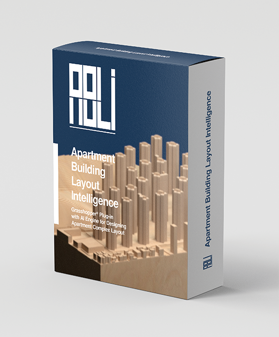
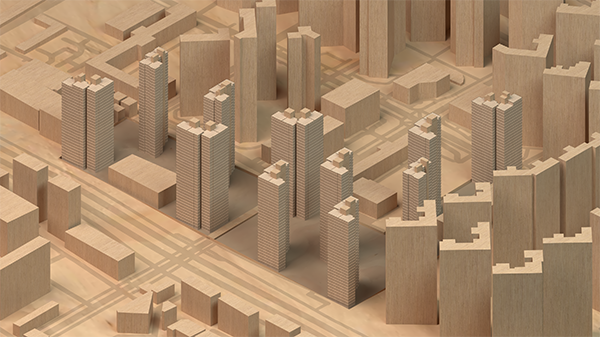
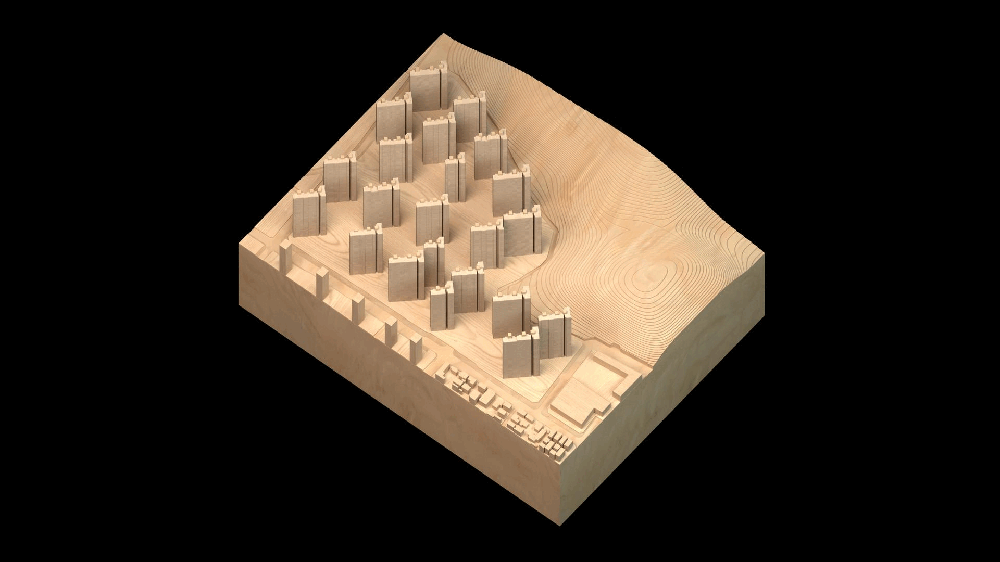
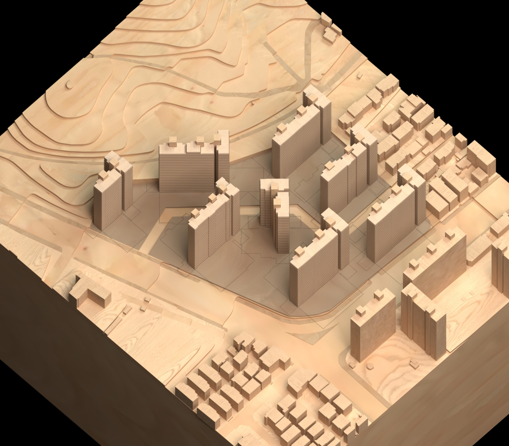

ABLi (Apartment Building Layout Intelligence) is the world’s first artificial intelligence system dedicated to the automated layout of apartment buildings. Conceived as a total solution for housing design automation, ABLi was commissioned by DL E&C, one of Korea’s leading construction and engineering companies, and combines computational design principles with state-of-the-art optimization methods. It interprets site information such as floor area ratio, building coverage, zoning regulations, and solar access to generate optimized building arrangements. Unlike conventional approaches, ABLi balances efficiency with design flexibility, enabling architects to explore diverse configurations while meeting regulatory and environmental constraints.

At the core of ABLi lies its pioneering “dynamic representation” of building forms. This unique method abstracts apartment blocks into topological structures, allowing the system to generate and adapt a wide variety of building shapes beyond traditional I, L, and Y forms. By responding to user preferences on orientation, massing combinations, and angles, ABLi produces solutions that are not only optimized but also adaptable. The result is an interactive workflow where designers can fine-tune building positions and orientations, while the AI recalculates and re-optimizes in real time .

ABLi has been engineered for seamless integration with Rhino and Grasshopper, widely used platforms in computational design. Delivered as a Grasshopper add-on, it provides a user-friendly interface and real-time visualization of massing and optimization histories directly within Rhino. This allows architects to track the quality of each solution as it evolves, ensuring transparency in the design process. Moreover, the system’s modular structure separates the engine from the interface, making it future-ready for upgrades and scalable computing environments such as high-performance servers or cloud-based systems .

Beyond its current capabilities, ABLi is designed as a platform for growth. Planned extensions include modules for automated unit plan generation, road network design within housing complexes, and parking layout optimization. The integration of deep learning, high-performance computing, and 3D physics engines will enable faster computations, more nuanced environmental simulations, and broader design possibilities. These advancements pave the way for ABLi’s transition from its first generation as a building-layout tool to a second and third generation as a comprehensive design intelligence system.

ABLi ultimately represents a new paradigm in generative design for housing. It is not just a software tool but an evolving design partner that collaborates with architects to explore, evaluate, and realize complex housing schemes. By bridging rigorous optimization with creative flexibility, ABLi sets the foundation for intelligent, data-driven approaches to architecture. Its vision extends toward making large-scale apartment planning more efficient, adaptable, and responsive to the social and environmental needs of future cities .